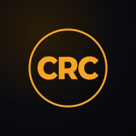

The app needs signal to open. Things you saved on your phone are safe and will send once you're back online.
Open index.html and paste the app link (ends in /exec) where it says PASTE-YOUR-APP-LINK-HERE.